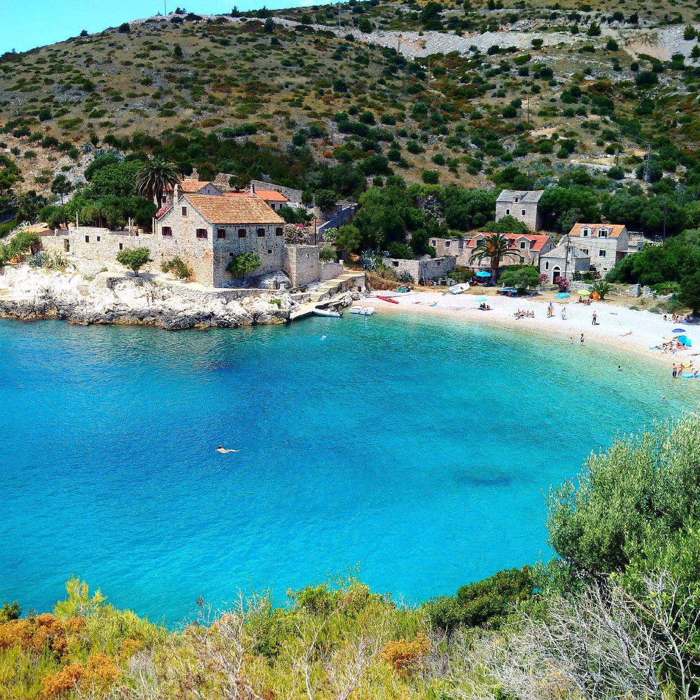
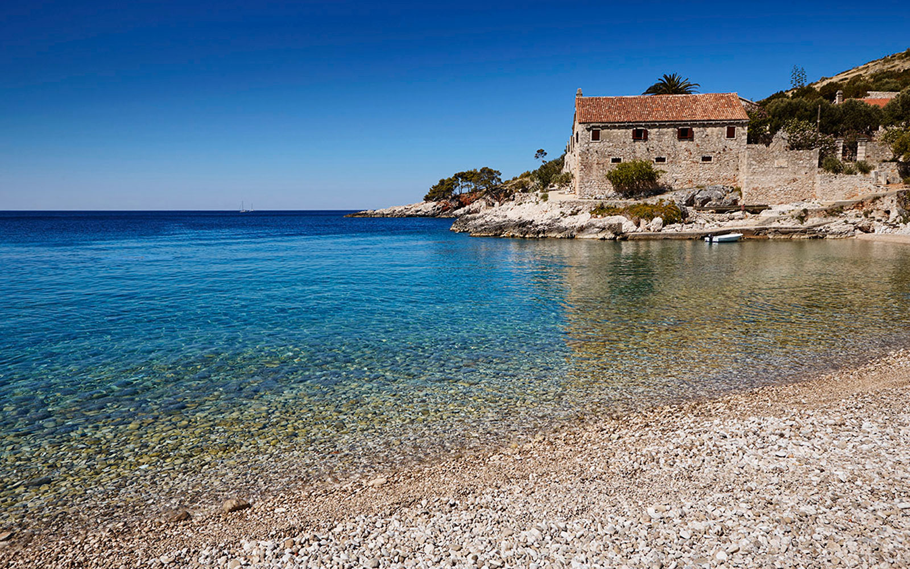

About Dubovica
Dubovica is a pebble beach located near Milna and Zara, which is about a ten-minute drive from Hvar. It is a popular destination for those looking to avoid the crowds. However, the parking lot near the beach can fill up quickly, so it is best to arrive early. To get to the beach, visitors must navigate a ten-minute descent over rocky and slightly wild terrain.

Despite the challenging terrain, the beautiful views of the sea make the journey worthwhile. The area's popularity is evident in the presence of the Kasandri family's country home from the 18th and 19th centuries. The Dubovica Tavern is located on the beach and offers a variety of seafood dishes made from net-caught fish.
Three things to do in Dubovica:
- Relax on the Beach: Dubovica is known for its beautiful pebble beach with crystal-clear waters that are perfect for swimming and sunbathing. You can also rent sun loungers and umbrellas from the beach bar and enjoy the beautiful surroundings.
- Explore the Surrounding Countryside: Dubovica is surrounded by beautiful vineyards, olive groves, and fields of lavender, which are all worth exploring. You can take a leisurely walk along the scenic trails or rent a bike and cycle through the countryside.
- Visit Dubovica Chapel: Located just above the beach, Dubovica Chapel is a beautiful historic chapel that dates back to the 17th century. It features a simple white facade with a beautiful Baroque altar and offers stunning views of the bay and the surrounding landscape.